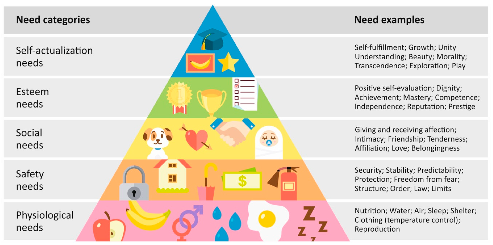
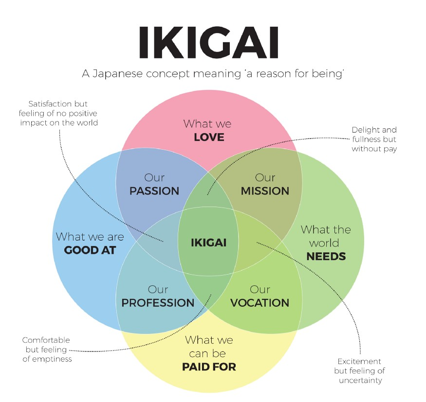

There’s a lot of self-help and personal development resources out there. Some of them can be profoundly life-changing when applied. But when there is so much material, so much content, where do we start? What order should we learn skills in? How should we prioritize them? The below is a “game manual” or blueprint that may help you on your journey.
This is a step by step process that I have personally followed, and one that I have recognized the teachers I have learnt from have followed too. All of the key resources are included in this document, as well as my personal thoughts on the best way to implement the various techniques.
It is important to remember that this is a life-long journey. At the time of writing, I have been working on personal development for 7 years. The detailed steps below that I have followed have had an immensely positive impact on my well-being, state of mine, internal and external world. However, there is much more to do, the journey never ends! With that being said, let’s get into it.
The foundations of a great life
The amazing thing about personal development work is that the research has already been done for us! Psychologist Abraham Maslow published a paper in 1943 – “A Theory of Human Motivation”, which contained Maslow's hierarchy of needs. The aim of this guide is to get to the stage where we can work on deep self-actualization. According to Maslow, (and this is very easily to verify in your own experience and observations) we cannot work on self-actualization until we have satisfied our more fundamental needs. The below figure tells the entire story here, but I will go into more detail, if you’re interested in reading more, click or tap the image for more articles.
Some of these points may already be addressed in your own life, if so – that’s great, tick it off and move on.
Let’s tackle the first stage – your physical needs. Just because you eat food and get some sleep doesn’t necessarily mean you’re meeting these needs. As with all of the material in this guide, it is meant to be a pointer – a map, not the territory. Bearing that in mind, I would strongly advise that you independently and extensively research each aspect. Having said that, following the key points below will ensure you meet your fundamental needs:
Take as long as you need to address these physical needs, they are crucial to maximizing your potential. You can’t focus on deep, meaningful work if you don’t feel as good as you possibly can physically.
Now that you’re feeling great, it’s time to address your need for security, stability and freedom from fear. So many people, even those with well-paying careers, live in a state of underlying fear. Many have a few months of savings at most, meaning they are in constant fear of losing their job, losing their income, or suffering some other kind of financial burden that would leave them in a state of desperation. Why is this? Consumerism and materialism are largely to blame.
It’s worth reading about planned and perceived obsolescence to further understand this, but in short - planned obsolescence is the sadly common practice that companies utilize to ensure a product becomes hard, or impossible, to use after a few years of use. Apple is a great example of this – they will provide customers with a one year warranty, meanwhile they build in non-replaceable batteries that greatly diminish in efficiency after that first year. Apple have sued independent repair shops and Tesla have gone the same way, servicing their vehicles at an independent garage can now void your warranty. The logic behind this is that when you take your product to a “certified” repair shop, the repair is usually extortionately expensive, leading most people to decide it’s just easier to buy a new product… great news for the company in question!
Cars, tech and fashion are the main industries that utilize intentional obsolescence. They also employ "perceived obsolescence" as a technique, where they make old tech or clothing seem uncool or antique. People use these products as status symbols so are easily swayed into buying the newest model. A great video that covers this in more detail can be found here.
Reading more about minimalist philosophy, (not the trendy, social media version of minimalism!) will set you on a totally paradigm-shifting mindset when it comes to how you spend your money. This video is a great start. The Mr. Money Moustache blog contains pretty much all of the information you will ever need about managing your finances and completely redefining the way you spend and invest your money. To summarize - we want to rid ourselves of, in the words of Philosopher Alain de Botton – “The constant tension or fear of being perceived as ‘unsuccessful’ by the society in materialistic terms”.
“But I don’t earn enough money to save or invest, I’ll never be financially independent!” I hear you say.
A common objection, and fortunately a simple one to overcome. In Japanese philosophy, there is a term known as Ikigai. This is the secret to developing financial independence, whilst cultivating meaning and joy from your daily work, as shown below.
The way to achieve this is to develop a valuable skill that is in demand, that pays well, that you enjoy and have a passion for and that you can get good at. There are many career paths that you can take that do not involve going to university or paying for expensive courses, I know this because I personally chose one. After university, I had no idea what to do with my career, so I researched jobs that pay well that can be self-taught. I found and fell in love with computer programming and software development. Since that time, only 7 years ago, I have tripled my salary, saved 2 years of living expenses, have paid off half a mortgage and have solid investments in various stocks, funds and cryptocurrency. I’m not telling you this to brag, I’m not “rich” by high-western standards, I live in a modest 2 bedroom bungalow in the country, drive a 17 year old car and I’m not a special talent in my field. However, what I have done is work almost every day on developing the skills related to software development, have read extensively about investing and personal finance and have implemented the techniques. It’s actually all pretty easy, as long as you are consistent, I believe anyone can achieve the same results.
So the first step in this process is finding something you love and have a passion for. Maybe it’s in IT, the arts, conservation, charity work, the service industry or something totally new. Like myself, you may well not know what this is until you try it out. You will need to experiment, but remember that passion and motivation is like a old well pump. The first few pumps are “primers”, you won’t get any water at first. But once the pump is primed, you will get water with each pump. This is exactly how motivation and passion works, you need to prime yourself by developing competence in a skill before you can become passionate about it.
A useful technique for finding your passion is asking yourself what you like, what you love and what you don't like. After you have a list of things, ask yourself why you like or love certain things and what the elements are that contribute to this. Search for patterns or connections to discover potential passions. Also learn about "flow". What gets you into that state? This could be a big pointer.
You don’t need to spend long working on your skill before either applying for a junior position in your field (I did this 2 months into learning programming, specifically JavaScript, I completely flunked the technical interview, but they hired me due to my enthusiasm and desire to learn), or starting your own business.
So, once you have developed the basics in a skill you have chosen, apply for positions as a junior or start your own business using that skill. After gaining around 2 years of professional experience, you will be much more competent and in a position to use the skill in higher paying positions. Once you have a decent income, start to invest regularly (monthly) in assets such as ethical funds & stocks. Research the effects of compounding interest if you need inspiration for why this is a great thing to do. Again, the Mr Money Moustache blog covers this in great detail. Also ensure you save at least 6 – 12 months of living expenses as an emergency fund. This ensures you always have the flexibility to deal with jobs or situations you want to leave, without being tied down by lack of financial freedom.
Ok, so at this stage, you’ll have a career, not just a job. This is a wonderful start. There are a few simple habits to add to our “foundations” stage, before we can move on:
Post-foundation & breaking free of the social matrix
The foundation stage will have taken a lot of work, but by this point you should be able to reflect back to the “pre-foundation” stage of your life and notice many significant, positive and amazing changes. But that was just the tip of the iceberg!
We need to set up a way to track our progress moving forward, a master journal that will log thoughts, insights and hard data. My recommendation is to use cloud-based documents with a folder system. Examples of this are Google Drive and Microsoft OneNote. The key features you want are a global search function, so that you can quickly find things and a way to categorize everything (folders and sub-folders).
I recommend making a document about each subject and sub-domain as you develop through them, make notes and a master list of key concepts that you can continuously refer to and refine as you move forward. You will also want to track things like savings and investments, skill investments (perhaps the number of hours you have spent working on a particular skill), to help keep you on track and serve as a source of motivation.
Here’s a recommended set of documents you may wish to consider:
That’s so much work! Yep! And it will be totally worth it. You don’t need to do this all at once, create each document as you go and as you study each subject. Ideally spend time learning each one in a lot of depth before moving on. The key resources list at the end of this guide will contain much of what you need to accomplish this.
Now that your documents are ready to use, let’s start learning! Below is a list of thoughts, introspections and subjects that you will need to learn about in depth to break free of the “social matrix”, i.e. overcome your cultural and social conditioning. Why would you want to do this? In short, to discover truth in an absolute sense. Every worldview, opinion and even memory you and I hold are hugely skewed by our upbringings and our own biases. Don’t you find it suspicious that what you consider to be “right”, “moral”, “true" or even factual, coincidentally and conveniently adhere to that of the society you are based in right now?
Consider this for a moment, in 99% of cases the devout Muslim or Christian will have been raised in a Muslim or Christian culture and family. The devout scientist will surround themselves with other materialist, rational, left-brain thinkers. The exclusive house-husband or house-wife will live in a society that almost exclusively practices monogamy, (a relatively recent tradition). The person with the latest smartphone and clothes will live in a consumerist, monetary society. Even the skeptic will surround themselves (usually virtually, online) with other “skeptics”, all the while forgetting to be sceptical about their own scepticism.
Hopefully these ideas have at least opened your mind to the possibility that what you consider right or true, isn’t so and that you have a lot of opening up to do. With that in mind, here is the list, search for each one independently, use the resources I have provided and read one or more books on each topic. This will potentially take months or even years, but with each subject you will chip away a little more at your biases and current idea of “self”. This will have a profound impact on your life in practical, spiritual and external ways.
Advanced concepts / developing spirituality and love
Every single point in the “Post-Foundation” stage can, and probably should take a significant amount of time to cover. Don’t just read the list and move on, save the list somewhere and work through it. If you truly study and embody each topic in depth, it will take years before you get to this stage. The rest of these concepts are advanced and couldn’t possibly be covered in one lifetime, it is a list to work through indefinitely, embracing the joy of the journey. At this stage there should be a radical shift in focus from outcomes to the intrinsic love of the process. With that being said, let’s get into it.
Key Resources
Bookmark or save this page, you will need to refer to this list for years to come!
These videos are considered to be essential viewing for anyone who wishes to live on Earth during the 21st century. Watch them fully and with intention, no distractions, make notes and re-watch them. They will totally, radically shift your mindset if you can truly consider the ideas they express.
Obviously these videos are just a start, an entry point. Do your own research and exploration after getting through these to find more ideas that resonate with you. A quick word of warning here though, be sure to actually implement the ideas in each one! If you just binge watch content, without making any notes, without reflecting on the content and without making any changes, you won’t get the results you’re hoping for (see the last video in the list for more on that).
The second list is what I consider essential reading, these books have had an indescribable impact on my way of thinking and overall psyche. I won’t include any links as it would be great if you can find them pre-owned, ideally buying new as a last resort.
This guide contains no affiliate links, I make no money from this or from any of the links contained within it. This is my best attempt, based on my experiences so far, at writing something that would serve as a lifelong guide to anyone that is willing to put in the work required. If I had to leave a small child with one thing, one consolidated manual to life, well this would be my offering to them. Most people reading this will be much older than a child, but remember it’s never, ever too late – as Mr. Wordsworth so brilliantly put it – “To begin, begin”.